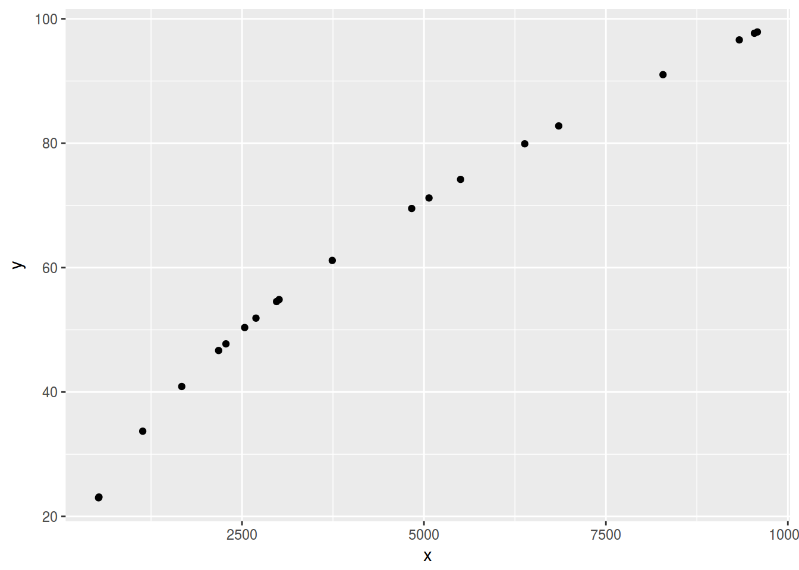

# install.packages("tidyverse")
library(tidyverse)library(tidyverse)
cor(mtcars$mpg,mtcars$qsec)## [1] 0.418684a <- cor.test(mtcars$mpg,mtcars$qsec)
a$conf.int## [1] 0.08195487 0.66961864
## attr(,"conf.level")
## [1] 0.95mtcars %>%
cor()## mpg cyl disp hp drat wt
## mpg 1.0000000 -0.8521620 -0.8475514 -0.7761684 0.68117191 -0.8676594
## cyl -0.8521620 1.0000000 0.9020329 0.8324475 -0.69993811 0.7824958
## disp -0.8475514 0.9020329 1.0000000 0.7909486 -0.71021393 0.8879799
## hp -0.7761684 0.8324475 0.7909486 1.0000000 -0.44875912 0.6587479
## drat 0.6811719 -0.6999381 -0.7102139 -0.4487591 1.00000000 -0.7124406
## wt -0.8676594 0.7824958 0.8879799 0.6587479 -0.71244065 1.0000000
## qsec 0.4186840 -0.5912421 -0.4336979 -0.7082234 0.09120476 -0.1747159
## vs 0.6640389 -0.8108118 -0.7104159 -0.7230967 0.44027846 -0.5549157
## am 0.5998324 -0.5226070 -0.5912270 -0.2432043 0.71271113 -0.6924953
## gear 0.4802848 -0.4926866 -0.5555692 -0.1257043 0.69961013 -0.5832870
## carb -0.5509251 0.5269883 0.3949769 0.7498125 -0.09078980 0.4276059
## qsec vs am gear carb
## mpg 0.41868403 0.6640389 0.59983243 0.4802848 -0.55092507
## cyl -0.59124207 -0.8108118 -0.52260705 -0.4926866 0.52698829
## disp -0.43369788 -0.7104159 -0.59122704 -0.5555692 0.39497686
## hp -0.70822339 -0.7230967 -0.24320426 -0.1257043 0.74981247
## drat 0.09120476 0.4402785 0.71271113 0.6996101 -0.09078980
## wt -0.17471588 -0.5549157 -0.69249526 -0.5832870 0.42760594
## qsec 1.00000000 0.7445354 -0.22986086 -0.2126822 -0.65624923
## vs 0.74453544 1.0000000 0.16834512 0.2060233 -0.56960714
## am -0.22986086 0.1683451 1.00000000 0.7940588 0.05753435
## gear -0.21268223 0.2060233 0.79405876 1.0000000 0.27407284
## carb -0.65624923 -0.5696071 0.05753435 0.2740728 1.00000000df <- data.frame(y = runif(20, 20, 100))
df %>%
mutate(x = y^2) %>%
cor(method = "p")## y x
## y 1.0000000 0.9837302
## x 0.9837302 1.0000000df %>%
mutate(x = y^2) %>%
ggplot(aes(x, y)) +
geom_point()
number =
dat <- read.csv("https://goo.gl/5bp7hH")
dat %>%
group_by(s.deletion) %>%
summarize(number = n())## # A tibble: 2 × 2
## s.deletion number
## <fctr> <int>
## 1 no 3755
## 2 yes 5091dat %>%
group_by(s.deletion, gramm.cat, phon.cont) %>%
summarize(number = n())## Source: local data frame [26 x 4]
## Groups: s.deletion, gramm.cat [?]
##
## s.deletion gramm.cat phon.cont number
## <fctr> <fctr> <fctr> <int>
## 1 no adjective consonant 261
## 2 no adjective pause 22
## 3 no adjective vowel 28
## 4 no determiner consonant 678
## 5 no determiner vowel 111
## 6 no noun consonant 418
## 7 no noun pause 132
## 8 no noun vowel 124
## 9 no separate morpheme consonant 1361
## 10 no separate morpheme pause 146
## # ... with 16 more rows